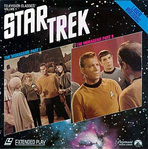
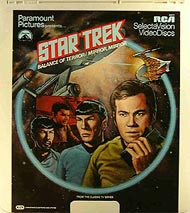
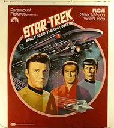
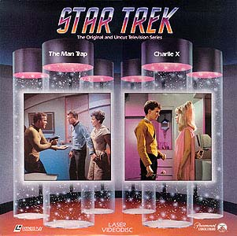
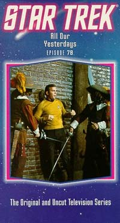
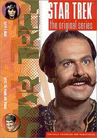

|
Srie
Clssica em Home Video
Em 1 de outubro de 1984, Jornada
nas Estrelas, a Srie Clssica, foi lanada pela
primeira vez em home vdeo nos EUA. Esse lanamento, em
LaserDisc, foi o primeiro volume de uma coleo da Paramount
Home Vdeo, chamada "Television Classics". Esse volume
consistia no episdio duplo "The Menagerie"
(episdio 16).

O LaserDisc era uma
tecnologia j com 6 anos de vida quando desse lanamento, mas as
distribuidoras, como a Paramount, ainda no usavam todos os
recursos que essa mdia oferecia. A imagem era apenas
ligeiramente superior ao VHS (pois ainda no se usava masters de
alta definio) e o som era apenas analgico sem reduo de
rudo. Mas a imagem e o som eram ainda muito superiores s
transmisses de televiso da poca.
Tambm em 1984 foram lanados alguns episdios da Srie
Clssica em formato de mdia da RCA, chamado CED, que durou
poucos anos nos EUA e nem chegou ao Brasil. Essa mdia consistia
em um cartucho com um disco analgico dentro. Ao inserir o
cartucho no aparelho, o disco era descarregado nesse ltimo. A
imagem tinha resoluo idntica ao VHS e o udio era tambm
analgico. Se no me engano a leitura dos discos CED era
atravs de algum processo ptico, enquanto que nos LaserDiscs a
leitura era a laser, assim como os CDs. Entretanto, assim como o
Betamax (rival do VHS nos anos 80), o CED fracassou no mercado e
desapareceu. Hoje alguns discos so objeto de procura por
colecionadores apenas pelas excelentes ilustraes da embalagem.


Essas ilustraes,
com um estilo clssico, so superiores a qualquer ilustrao
de qualquer outra mdia onde a Srie Clssica j foi
lanada.
Em abril de 1985, a Srie Clssica lanada em VHS nos
EUA, na ordem de exibio da primeira vez que a srie foi
televisionada. Assim, o episdio "The Man Trap"
foi o primeiro a ser lanado, mesmo sendo o episdio 6 da
srie. A imagem dos episdios era razovel e o som tinha a
opo Hi-Fi para obteno de maior fidelidade.
Nessa mesma poca a Paramount comea a liberar em LaserDisc os
demais episdios da Srie Clssica em uma coleo
exclusiva, pois antes s estava disponvel o "The
Menagerie", dentro da coleo "Television Classics".

Essa coleo em
LaserDisc demorou quatro anos para ser completada. O ltimo
episdio da srie, "The Turnabout Intruder",
foi lanado em april de 1989.
Durante
esses quatro anos, foi introduzido nos LaserDiscs a tecnologia
"CX" que melhorava um pouco a qualidade do udio
analgico atravs da reduo de rudos. Entretanto, essa
tecnologia operava melhor em filmes com udio stereo. Como os
episdios da Srie Clssica foram produzidos em mono,
muitos consumidores reclamavam de distores no udio. Essa
tecnologia, enquanto no aperfeioada, foi introduzida e
retirada vrias vezes nos LaserDiscs. Como conseqncia apenas
12 episdios (que no me lembro no momento), "The
Turnabout Intruder" e a verso branco e preto/colorida
do "The Cage" vieram com essa tecnologia nos
discos.
Aps
o encerramento dos lanamentos da Srie Clssica em
LaserDisc, foi introduzido nessa mdia a tecnologia de udio
Digital, idntica utilizada nos CDs de udio at os dias de
hoje. A maioria dos LaserDiscs lanados j no incio da dcada
de 90 j vinham com udio digital que muito superior ao
udio analgico usado nessa mdia at ento. Todos os
episdios da Nova Gerao, Deep Space Nine e Voyager
que foram lanados em LaserDisc vinham com udio digital.
Como as distribuidoras j usavam masters de alta definio para
a autorao dos LaserDiscs desde o incio da dcada de 90,
esses episdios tinham imagem muito superior ao VHS.
 Tambm
no incio dos anos 90 a Paramount relanou, em VHS, todos os
episdios da Srie Clssica. Os episdios vieram com
imagem um pouco melhor em relao s antigas fitas e com som
"Dolby B NR" que praticamente eliminava qualquer rudo
no udio hi-fi. Entretanto, a Paramount foi infeliz em redesenhar
as embalagens, que ficaram horrorosas, consistindo em um fundo
azul com uma foto do episdio, muitas vezes mal escolhida. Outro
ponto negativo foi a supresso dos trailers do episdio seguinte
ao fim de cada fita. Em compensao cada fita acompanhava um
card de colecionador.
As cinco fitas que a CIC Vdeo lanou aqui no Brasil (somente
para locao) eram baseadas nas fitas lanadas nos anos 80 nos
EUA, possuindo imagem e som inferiores s novas fitas acima
citadas.
 No
final dos anos 90 a Srie Clssica chegou em DVD nos EUA.
Foi sem dvida o mais caprichado lanamento da srie em home
vdeo. A imagem de todos os episdios foi restaurada e
masterizada digitalmente, com excelente qualidade. O som foi
tambm restaurado e ganhou nova mixagem no padro Dolby Digital
5.1, com 6 canais independentes de udio. Foi uma experincia
nova para os fs munidos de um home teather assistirem aos
episdios da Srie Clssica com som bombstico como s
os melhores cinemas proporcionam. No episdio "The
Corbomite Maneuver", quando a Enterprise tenta se livrar
do raio trator da nave inimiga parece que as paredes da sala vo
rachar devido agresso do udio.
Mesmo tendo a Paramount feito um excelente trabalho no udio da Srie
Clssica em DVD, muitos fs ficaram insatisfeitos com o fato
do udio original mono no estar disponvel nos discos, pois
seria interessante assistir tambm com o mesmo udio original
que era transmitido na televiso, mais no sentido de nostalgia
mesmo.
O que reserva a tecnologia do futuro para a Srie Clssica?
Ser possvel melhorar ainda mais a apresentao dos
episdios?
Com a chegada das televises digitais Hi-Definition (HDTV), com
certeza teremos um aumento da qualidade de imagem, que hoje um
tanto prejudicada pela baixa resoluo (ou melhor, hoje alta
resoluo, mas amanh ser baixa) do sistema NTSC e PAL.
Com a expanso da tecnologia de udio "Advanced Resolution",
hoje existente apenas em discos DVD-Audio (nova tecnologia, s
com udio, sem imagem, diferente do udio dos DVD-Videos que
existem hoje no mercado), tambm teremos um aumento na qualidade
de som. S como exemplo, o CD opera a 16-bit e 48Khz, enquanto
que o DVD-Audio opera a 24-bit e 192Khz.
Daqui a 10 anos, ou menos, quem sabe o que est para vir?
Luiz
Felipe do Vale Tavares f de Jornada, DVDs e fico
cientfica e escreve sobre Srie Clssica para o Trek
Brasilis
|